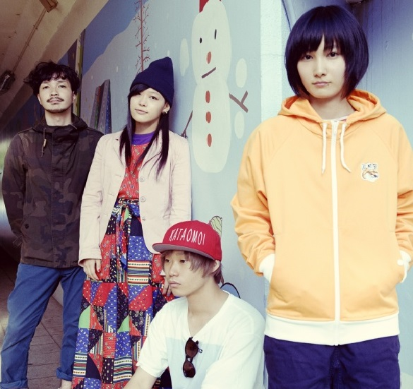

Kinoko Teikoku
Kinoko Teikoku (きのこ帝国, literally "Mushroom Empire") was a Japanese shoegazing/dream pop band. Their first EP, Long Good Bye, peaked in the Oricon Albums Chart at #56 on the week of December 4, 2013. Their 2016 album “Ai no Yukue” peaked at #19 on Oricon Album Chart on December 14, 2016. On May 27, 2019 the band announced they will be suspending activity. Kinoko Teikoku was formed in 2007 by university classmates. They began their live activities in 2008. Under DAIZAWA RECORDS and UK.PROJECT inc. they released their debut mini-album Uzu ni Naru on April 29, 2012. In 2015 the band signed with EMI Records and made their major debut with the album Neko to Allergy on November 11, 2015.Wikipedia Generasia Source
| Origin | Genres | Years active | Labels | Members |
|---|---|---|---|---|
| Kanagawa Prefecture, Japan | Indie rock, shoegazing, dream pop, post-rock | 2007–2019 | Daizawa Records/UK.PROJECT, EMI Records | Chiaki Satō (vocals, guitar) A-chan (guitar, keyboards) Shigeaki Taniguchi (bass) Kon Nishimura (drums) |